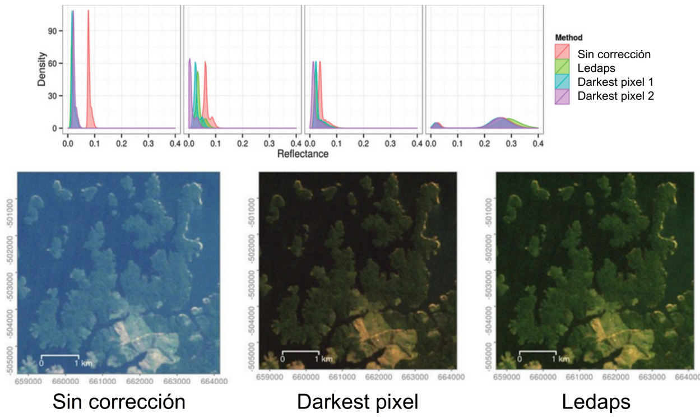

Procesamiento Digital (Parte 1)
Corrección atmosférica
La corrección atmosférica es el proceso de remover los efectos de la atmósfera para generar valores de reflectancia superficial. La corrección atmosférica puede mejorar de manera radical el uso de una imagen y los análisis que se pueden desarrollar sobre la misma. La influencia atmosférica no afecta por igual a los dos componentes del cálculo de la reflectividad: flujo descendente (denominador) y ascendente (numerador), ya que el espesor de la atmósfera que atraviesan es distinto.
La radianza que recibe el satélite no es la misma que sale del suelo, y es esta la que interesa, ya que lo que se busca es medir la reflectividad de la cubierta y no la influida por la atmósfera. Para esto, es necesario estimar la transmisividad de la atmósfera (descendente y ascendente), la irradianza difusa y la radianza atmosférica debido a la dispersión. En el mejor de los escenarios, la realización de este proceso requiere de información sobre las condiciones atmosféricas y las propiedades de los aerosoles al momento de captura de la escena.

Ilustración: Remote Sensing and GIS for Ecologist, Wegmann (2016).
.
Le invitamos a que revise el siguiente videotutorial dónde aplicará todos los conceptos revisados al calibrar y corregir atmosféricamente su imagen satelital:
.
Obra publicada con Licencia Creative Commons Reconocimiento Compartir igual 4.0